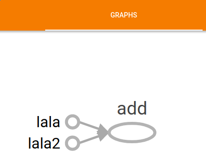
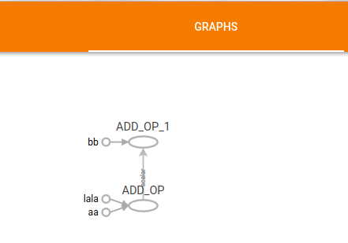

TensorFlow
TensorBoard
利用TensorBoard查看graph有助于理解TensorFlow。先了解一下如何保存log。下面的代码定义了两个常量和一个加法操作并保存到logs目录下。
1 | a = tf.constant(1, name="lala") |
终端执行以下命令后用浏览器打开localhost:6006即可利用TensorBoard查看graph，如Fig.1。图中的常量名是定义常量时name参数的值，和python中的变量名无关。
1 | tensorboard --logdir ./logs |

当然我们也可以自定义端口号，详情请执行tensorflow --help查看帮助。
后面的代码都可以用这种方式来实现graph的可视化。
函数内定义的变量/常量也是在graph中添加节点，不会因为函数结束而消失。当graph中已存在某个名字的节点时会自动编号，如下面代码中的第二个ADD_OP被命名成了ADD_OP_1，如Fig.2。
1 | def foo(input, name): |

既然函数中定义的变量仍然存在graph中，而函数foo中的a的作用域仅仅为函数内，这就有了在函数外如何调用“aa”和“bb”的问题。
变量复用
TensorFlow中不存在常量复用，所以想要在函数外操作“aa”和”bb“我们只能将它们作为函数的返回值来实现在函数外对”aa“和”bb“的操作。但我们可以复用变量。
TensorFlow中有两种创建变量的方式：
- tf.Variable()
- tf.get_variable()
官方推荐使用第二种方式创建变量，因为第二种方式支持变量复用。详见官网教程。
本来想写一个好点的入门教程的，但后来看到Stanford已经开了TensorFlow的课程了，就不继续写了。链接为：CS 20SI: Tensorflow for Deep Learning Research 。